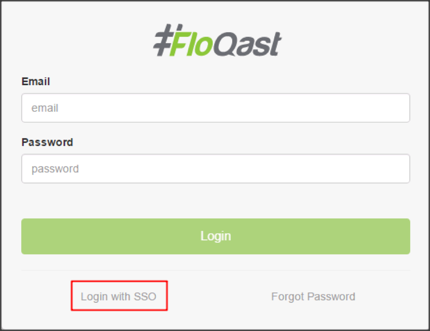
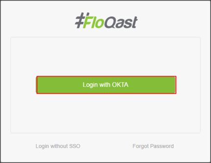

Contact the FloQast Support team and request that they enable SAML 2.0 for your account.
Attach the following IDP Metadata URL:
Sign into the Okta Admin dashboard to generate this value.
The FloQast Support team will process your request. After receiving a confirmation email, you can start assigning people to the application.
Notes:
IDP-initiated flows and SP-initiated flows are supported.
Just In Time (JIT) Provisioning is not supported.
Go to https://go.floqast.com/login.
Click Login with SSO.

Click Login with OKTA.
